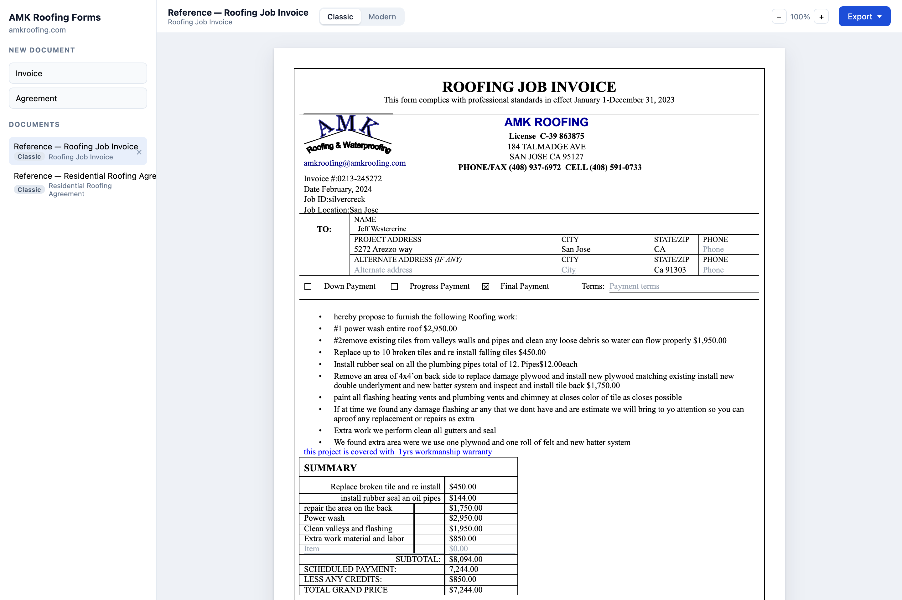
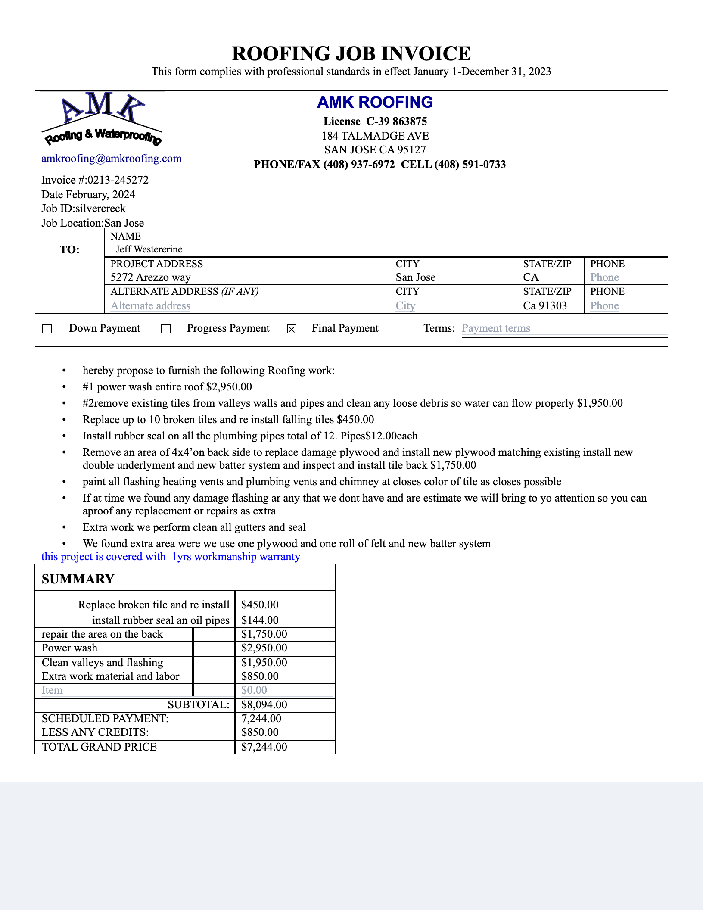
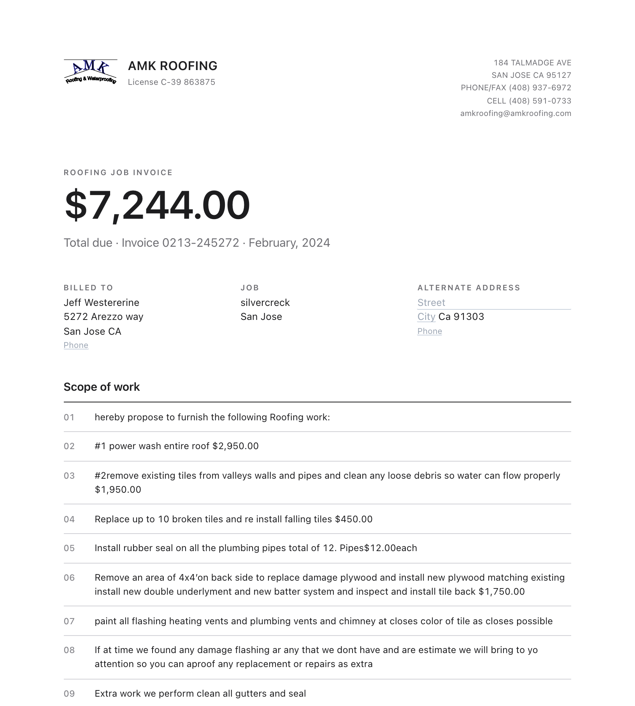
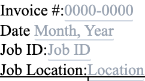
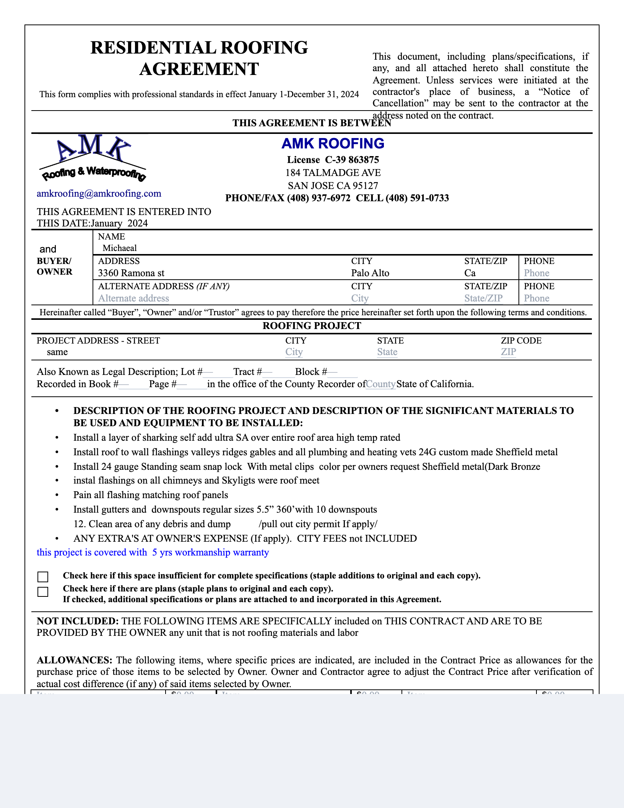
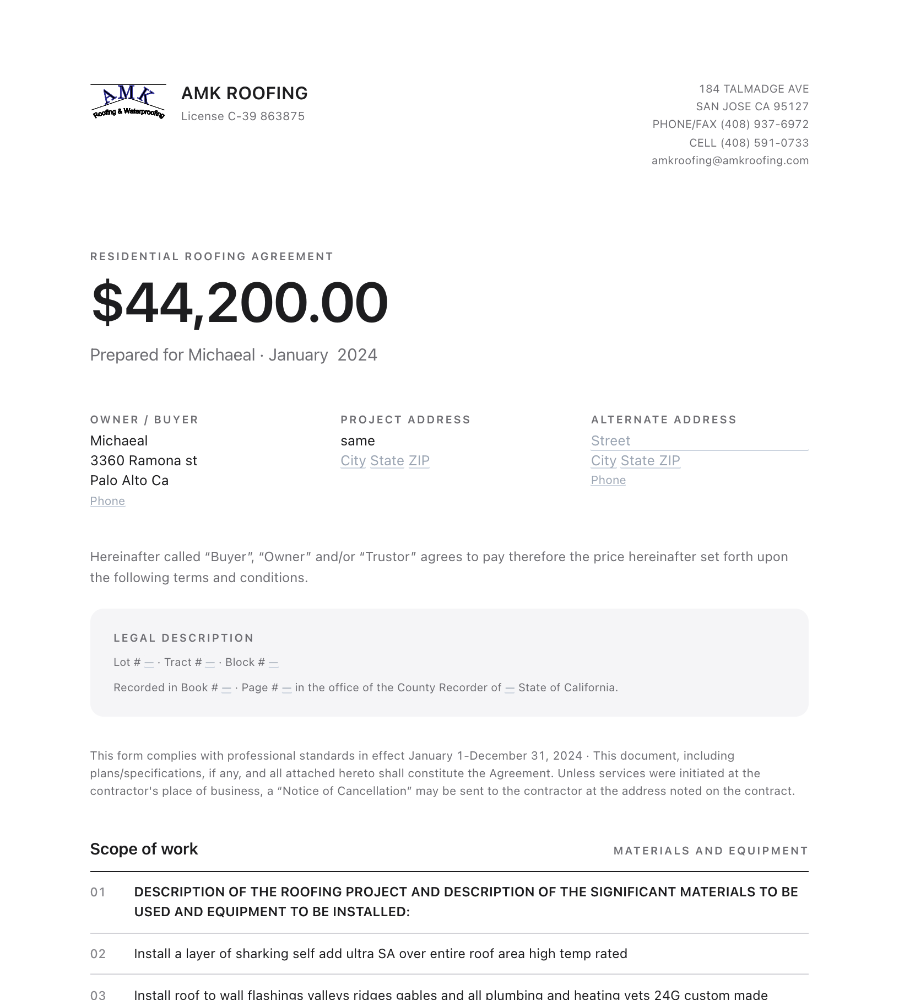
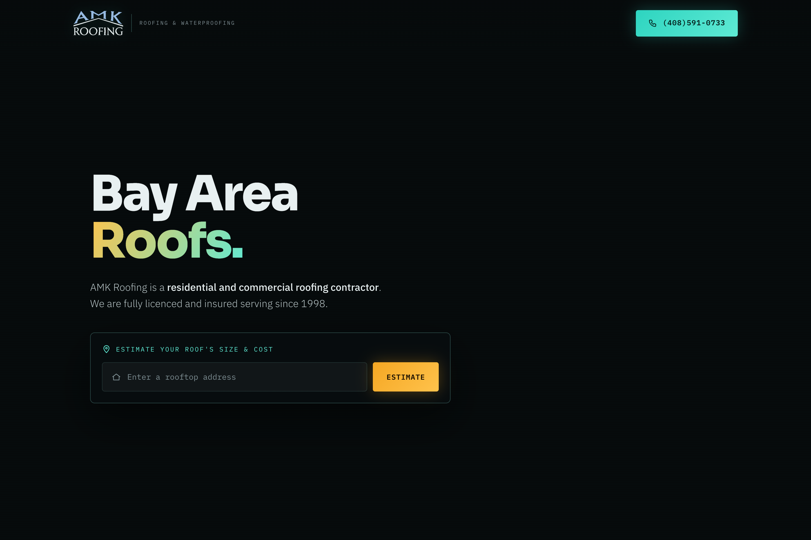

AMK Roofing · Engineering note
A roofing form has to land on paper where the original landed, and it has to keep working after someone opens it in Word. Those are two geometries. The application refuses to fake one with the other.
An invoice and a residential agreement are not page templates with holes punched in them. They are a small record: fields, checks, lists, a signature, a logo. Classic and Modern are two readings of that record. Switching tabs does not copy the document and does not lose a keystroke. The toolbar changes which component paints the same store.
Classic is the printed original, rebuilt so a sheet can be laid over the source PDF. Modern is the same clauses and the same blanks, set so a longer scope item grows the page instead of colliding with the next rule. The figures below are one saved invoice, the reference job at 5272 Arezzo Way, shown both ways.



The store that both layouts read is ordinary React state. A field change is a named write. Neither layout owns the data, so neither can drift from the other while you type.
app/forms-web/src/lib/documentStore.tsx
setField: (name, value) =>
patch((d) => ({ ...d, fields: { ...d.fields, [name]: value } })),
setCheck: (name, value) =>
patch((d) => ({ ...d, checks: { ...d.checks, [name]: value } })),
The source invoices are US Letter, 612 by 792 points. The classic sheet is that rectangle. Positions in the markup are the positions a PDF viewer reports, copied across, not redesigned. A rule under the letterhead is not “somewhere below the header.” It is top: 78.6pt.
app/forms-web/src/styles/paper.css
.sheet {
position: relative;
width: 612pt;
height: 792pt;
font-family: "Times New Roman", Times, "Liberation Serif", Tinos, serif;
font-size: 10pt;
line-height: 1.107;
}
line-height: 1.107 is the height of Times New Roman’s glyph box. With that number, the CSS top edge of a line and the text bounding box in the original PDF are the same edge. Without it, every copied coordinate would be systematically wrong, and the error would look like a tasteful adjustment.
app/forms-web/src/forms/InvoiceForm.tsx
<div className="rule" style={{ left: "30.6pt", top: "78.6pt", width: "550.8pt" }} />
<CompanyHeader top={81.8} />
Modern refuses that discipline on purpose. Content decides its height, and the printer breaks pages. When that layout is exported, the server is asked for real page margins — 0.75 inches top and bottom, 0.85 on the side — because the sheet no longer paints its own frame. Chromium’s PDF margin API speaks inches, so the constants are inches that match the on-screen padding in points.
app/forms-web/src/forms/modern/parts.tsx
/** 0.75in is 54pt and 0.85in is 61.2pt, matching `.msheet`'s padding. */
export const MODERN_MARGINS = { top: "0.75in", bottom: "0.75in", side: "0.85in" };
An empty invoice still has to print clean, and a blank field still has to be findable on screen. The usual fix — a border, a minimum width, a placeholder input — changes the line box. On a page matched to a tenth of a point, a one-pixel border is enough to wrap a cell and shove a rule.
So the hint is the ::before of an empty contenteditable, and it is white-space: nowrap so a long prompt cannot grow the line. The underline is an inset shadow. The focus ring is an outline. Neither occupies layout. Both live in @media screen, which means the print and the PDF, which are not screen, never see them.

app/forms-web/src/styles/paper.css
.ed[data-empty]::before {
content: attr(data-placeholder);
color: #9aa4b2;
white-space: nowrap;
}
@media screen {
.ed:focus {
background: rgba(37, 99, 235, 0.16);
outline: 1px solid rgba(37, 99, 235, 0.55);
}
.ed[data-empty] {
box-shadow: inset 0 -1px 0 #ccd4df;
}
}
The same component protects the caret and the type. It writes the DOM only when the incoming value actually differs from what is already rendered, so a keystroke does not reset the cursor. A paste is forced to plain text, collapsed to one line unless the field is meant to be a paragraph. The form’s typography is the form’s, not whatever Word or a web page had on the clipboard.
app/forms-web/src/components/Editable.tsx
onPaste={(e) => {
e.preventDefault();
const text = e.clipboardData.getData("text/plain");
document.execCommand(
"insertText",
false,
multiline ? text : text.replace(/\s*\n+\s*/g, " "),
);
}}
A second layout engine for PDF would drift. The browser already has the page, typeset, with the logo fitted and the signature drawn. Export sends that markup and every readable stylesheet to the server. Headless Chromium prints it. The download matches the screen because it is the screen, with the editor’s chrome left behind in @media screen.
app/forms-api/app/pdf.py
def build_page(req, base_url):
return f"""<!doctype html>
<html>
<head>
<style>{req.css}</style>
<style>
@page {{ size: letter; margin: {req.margin_top} {req.margin_side} {req.margin_bottom}; }}
html, body {{ margin: 0; padding: 0; background: #fff; }}
</style>
</head>
<body class="print-root">{req.html}</body>
</html>"""
return await page.pdf(
format="Letter",
print_background=True,
prefer_css_page_size=True,
)
prefer_css_page_size lets the classic sheet’s fixed 612×792 points be the page, edge to edge. The modern sheet, which flows, passes the margins from section 02 instead. One printer, two instructions, chosen by which geometry is on screen.
Word will open HTML. The file would look close, and then fall apart. Absolute positions, the thing that makes Fig. 2 overlay the original, are exactly what stop a longer address from pushing the total down. So the .docx is not a conversion. It is a second implementation of the same record, built from tables, paragraphs, lists, and content controls.
app/forms-api/app/word/__init__.py
def render_docx(request: WordRequest) -> bytes:
sheet = Sheet(request.data, THEMES[request.style])
_TEMPLATES[request.template](sheet)
buffer = BytesIO()
sheet.document.save(buffer)
return buffer.getvalue()
A blank on screen is a grey prompt that must not print. A blank in Word has to stay blank and still tell the next person what to type. A grey run would do that until they typed, and then the new text would stay grey. Word’s own templates solve this with a plain-text content control: the prompt shows, the control selects as one object, and the first keystroke replaces it with normally formatted text. The export does that, and it emits the control’s children in the order the ECMA-376 schema demands. Word reports “unreadable content” when that order is wrong. order.py is generated from the schema so the order is not a memory.
app/forms-api/app/word/builder.py
def _placeholder(self, paragraph, tag, text, ink):
"""A plain-text content control showing its prompt."""
sdt = OxmlElement("w:sdt")
properties = OxmlElement("w:sdtPr")
# Schema order: alias, tag, id, placeholder, then the marker
# saying the prompt is showing, then the control's type.
...
properties.append(OxmlElement("w:showingPlcHdr"))
properties.append(OxmlElement("w:text"))
The consequence is deliberate. The Word file is not pixel-identical to the PDF. The PDF is the accurate page. Word is the document someone can keep editing. The modern theme is set in Calibri there, because the SF Pro on screen is not installed on Windows and cannot be embedded.
The agreement’s last pages are a wall of legal text. Re-typesetting them in Times New Roman looks honest and is wrong. The reference PDF embeds only subsets of its fonts, so those fonts cannot be reused, and the Times New Roman on a Mac is about four percent wider. Four percent is enough to change every line break. A “close enough” setting would be a different contract.
The terms are extracted instead. Each line keeps the position it had in the original, and the classic pages place those lines verbatim. The record of each line also remembers whether it was justified. A justified line is, by definition, not the end of its paragraph. That single bit is enough to stitch the lines back into paragraphs for Modern and for Word, which set their own measure and must not keep the original’s line breaks.


app/forms-api/app/word/prose.py
for line in column:
buffer.append(line["t"].strip())
if line["j"]:
continue # justified: the paragraph is still going
text = " ".join(buffer)
blocks.append(Block(
heading=len(text) <= 55 and text == text.upper(),
text=text,
))
The standing clauses — the sentences that are not the terms pages — live in one JSON file the browser renders and the server reads. There is no second copy to “keep in sync,” except the vendor snapshot the container build needs because the API image cannot see the React tree. The build fails if that snapshot drifts.
The marketing site estimates a roof from an address. Solar, geocoding, and satellite tiles are Google APIs, and they bill per call. The first design put the key in the page, which means it was in every browser. The correction is small and strict: the page never receives the key. scripts/config.js, generated at build time, holds a flag for which tile engine to use and nothing else.

A proxy that merely hides the key is still a public Google client. Each route therefore refuses work before it spends anything: the method, the presence of the key, the calling origin, a per-IP budget, and a bounding box around the service area. A tile request is checked the same way, by converting the slippy-map indices back to the latitude and longitude of the tile’s center. The in-memory limit is a speed bump. The hard ceiling is the daily quota in Google Cloud.
app/api/_lib/guard.js
function rejected(req, res, { methods = ["GET"] } = {}) {
if (!methods.includes(req.method)) {
res.status(405).json({ error: "method_not_allowed" });
return true;
}
if (!KEY) {
res.status(503).json({ error: "api_key_not_configured" });
return true;
}
if (!originAllowed(req)) {
res.status(403).json({ error: "forbidden_origin" });
return true;
}
if (rateLimited(req)) {
res.setHeader("Retry-After", "60");
res.status(429).json({ error: "rate_limited" });
return true;
}
return false;
}
The forms API does not borrow those routes. It is mounted at /forms/api, and the roof scan stays at /api/solar, /api/geocode, and /api/tiles. One host, two kinds of request, no shared prefix to collide in. On Vercel the forms server is a container, because printing the page requires Chromium, which a normal function cannot carry. Documents there belong in Blob. The container disk is wiped when an instance scales to zero, and a JSON file on that disk is not a database.
The forms are served at amkroofing.com/forms. Classic sheets are 612×792pt. PDF export prints the DOM. Word export builds a .docx from the same record. Figures in this note were captured from the local app on 27 September 2026.